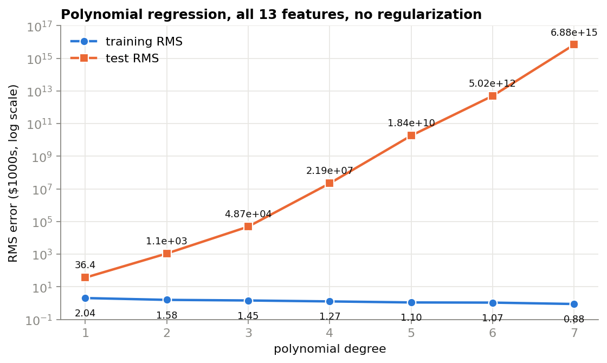
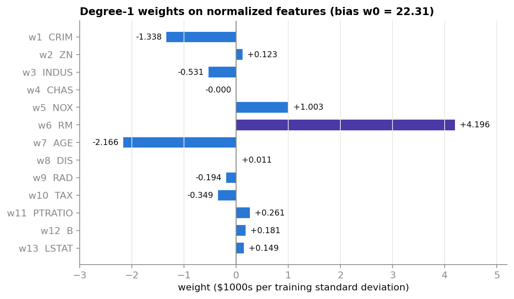
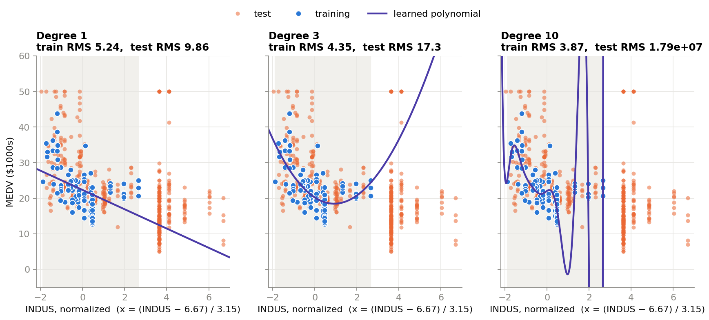
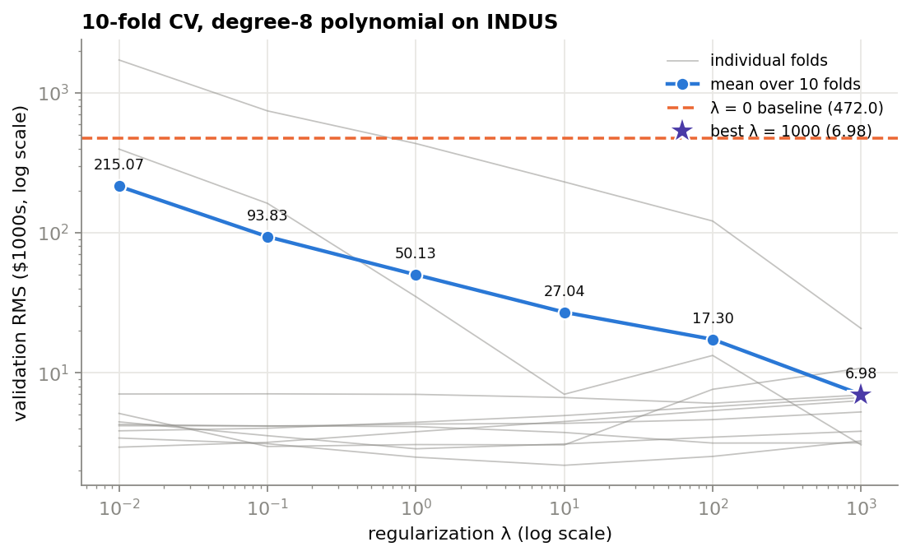
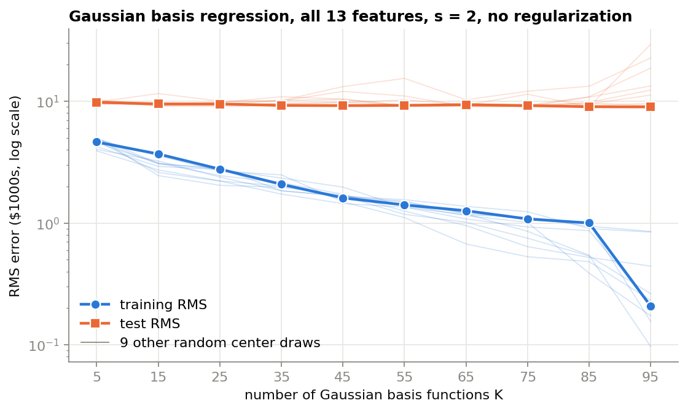
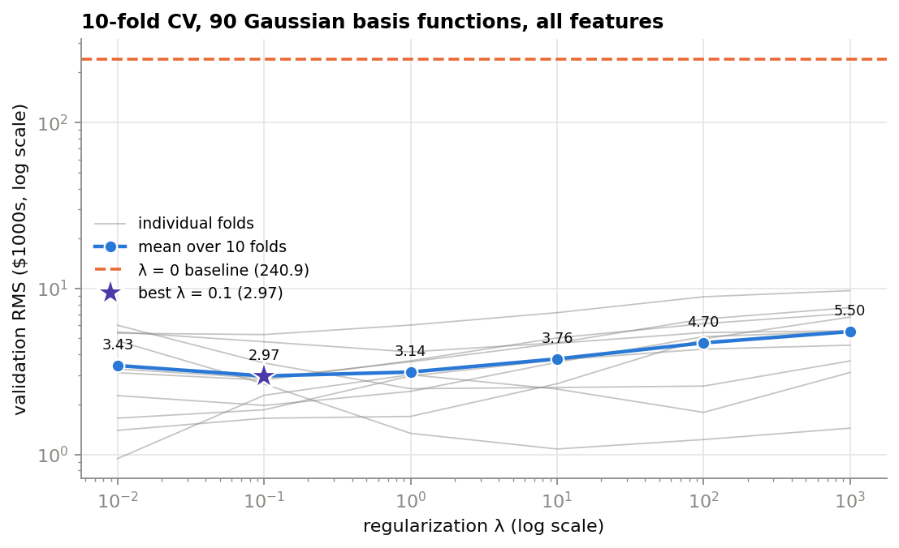

Coursework / SYDE 572, Pattern Recognition / Assignment 2
Assignment 2: Linear Regression
Linear basis function regression on the Boston Housing data, predicting median house value from 13 town features. Part 1 uses polynomial basis functions, with and without L2 regularization. Part 2 uses Gaussian basis functions centred on random training points. Cross-validation picks the regularization constant in both parts.
Setup
Data. 506 towns, 13 input features and the target MEDV (median home value in $1000s). The first 100 towns are the training set and the remaining 406 are the test set.
Feature numbering. The assignment calls the weight on the 6th feature \(w_5\), so it counts features from 0. I follow that convention for \(X_n(:,2)\) and "the 2nd feature" in (c) and (d): both mean column index 2, INDUS (proportion of non-retail business acres). Column 1, ZN, would also be a poor choice: it is zero for 63 of the 100 training towns. In the weight table, \(w_0\) is the bias and \(w_i\) is the weight on feature \(i\) counted from 1, so RM is \(w_6\) there.
Normalization. Each feature is standardized with the training-set mean and standard deviation, \(x \leftarrow (x - \mu_{\text{train}}) / \sigma_{\text{train}}\), and the test set is transformed with the same \(\mu, \sigma\). CHAS (borders the Charles River) is 0 for all of the first 100 towns, so \(\sigma = 0\); I set \(\sigma = 1\) for it, leaving a column of zeros that receives weight 0. The target is not normalized, so all errors are in $1000s.
Models. With design matrix \(\Phi\) and targets \(\mathbf{t}\), the weights minimize
\[ E(\mathbf{w}) = \tfrac{1}{2}\lVert \Phi\mathbf{w} - \mathbf{t} \rVert^2 + \tfrac{\lambda}{2}\lVert \mathbf{w}_{1:} \rVert^2 \quad\Rightarrow\quad \mathbf{w} = (\lambda \tilde{I} + \Phi^\top\Phi)^{-1}\Phi^\top\mathbf{t}, \]where \(\tilde{I}\) is the identity with a 0 in the bias position. The bias is left unpenalized; otherwise a large \(\lambda\) shrinks predictions toward $0 rather than toward the mean price. For \(\lambda = 0\), the high-degree design matrices are rank-deficient (the CHAS column) and badly conditioned, so I solve with np.linalg.lstsq, which returns the minimum-norm least-squares solution.
The polynomial basis for degree \(M\) is \(\boldsymbol\phi(\mathbf{x}) = (1,\, x_1, \dots, x_{13},\, x_1^2, \dots, x_{13}^2,\, \dots,\, x_1^M, \dots, x_{13}^M)\): single-variable monomials only, \(1 + 13M\) weights. The Gaussian basis is
\[ \phi_j(\mathbf{x}) = \exp\!\left(-\frac{\lVert \mathbf{x} - \boldsymbol\mu_j \rVert^2}{2s^2}\right), \quad s = 2, \]plus a bias column. The width \(s = 2\) is about half the median distance (4.6) between normalized training points, so each basis function covers a neighbourhood of similar towns.
Error. \(E_{\text{RMS}} = \sqrt{\tfrac{1}{N}\sum_n (y(\mathbf{x}_n) - t_n)^2}\). Cross-validation splits the 100 training towns into 10 consecutive folds of 10. Each fold is held out once, the model is trained on the other 90 (with normalization fixed from all 100), and the reported value is the mean of the 10 validation RMS errors.
Part 1: Polynomial basis functions
(a) Error versus degree
| Degree | Weights | Training RMS | Test RMS |
|---|---|---|---|
| 1 | 14 | 2.037 | 36.44 |
| 2 | 27 | 1.578 | 1,097 |
| 3 | 40 | 1.449 | \(4.87 \times 10^{4}\) |
| 4 | 53 | 1.271 | \(2.19 \times 10^{7}\) |
| 5 | 66 | 1.097 | \(1.84 \times 10^{10}\) |
| 6 | 79 | 1.073 | \(5.02 \times 10^{12}\) |
| 7 | 92 | 0.882 | \(6.88 \times 10^{15}\) |

Comment. Training error decreases monotonically, as it must: each degree's model contains the previous one. By degree 7 there are 92 weights for 100 training points, and the model fits the training set to within $880.
Test error is the opposite: overfitting compounded by extrapolation. The first 100 rows are a narrow, geographically clustered set of suburbs, and the test set contains towns far outside their range. The worst is crime rate. Training CRIM has mean 0.28 and standard deviation 0.39, but test towns reach CRIM = 89, which is 229 standard deviations out. For that town (actual value $10,400), the degree-1 model’s −1.34 weight on CRIM drives the prediction to −$284,000. Its median absolute test error is only $4,850; the RMS of 36 comes from a handful of high-crime towns. Each extra degree raises those values to a higher power (\(229^7 \approx 3 \times 10^{16}\)), which is why test RMS grows by a near-constant factor per degree. For reference, predicting the training mean for every test town gives a test RMS of 9.83. No unregularized polynomial beats that.
(b) Degree-1 weights
Because the inputs are normalized, each learned weight \(w_i\) is the change in predicted price, in $1000s, per one training standard deviation of feature \(i\). Dividing by \(\sigma_i\) converts back to original units. The bias in original units is \(w_0 - \sum_i w_i \mu_i / \sigma_i\).
| Weight | Feature | \(\mu_{\text{train}}\) | \(\sigma_{\text{train}}\) | Normalized \(w_i\) | Per original unit \(w_i / \sigma_i\) |
|---|---|---|---|---|---|
| \(w_0\) | bias | 22.309 | −37.904 | ||
| \(w_1\) | CRIM, crime rate | 0.283 | 0.387 | −1.338 | −3.456 |
| \(w_2\) | ZN, large-lot zoning | 12.385 | 22.852 | 0.123 | 0.0054 |
| \(w_3\) | INDUS, industrial acres | 6.669 | 3.147 | −0.531 | −0.169 |
| \(w_4\) | CHAS, river | 0 | (0) | 0 | 0 |
| \(w_5\) | NOX, nitric oxides | 0.471 | 0.047 | 1.003 | 21.515 |
| \(w_6\) | RM, rooms per dwelling | 6.234 | 0.488 | 4.196 | 8.591 |
| \(w_7\) | AGE, pre-1940 units | 56.252 | 27.339 | −2.166 | −0.079 |
| \(w_8\) | DIS, distance to jobs | 5.177 | 1.405 | 0.011 | 0.0076 |
| \(w_9\) | RAD, highway access | 3.960 | 1.385 | −0.194 | −0.140 |
| \(w_{10}\) | TAX, property tax | 289.49 | 45.692 | −0.349 | −0.0076 |
| \(w_{11}\) | PTRATIO, pupil–teacher | 18.690 | 1.690 | 0.261 | 0.155 |
| \(w_{12}\) | B | 385.30 | 27.250 | 0.181 | 0.0066 |
| \(w_{13}\) | LSTAT, % lower status | 10.773 | 5.671 | 0.149 | 0.026 |

RM, \(w_5\): The weight is +4.196 per standard deviation, or +8.59 ($8,590) per additional room. This is reasonable. More rooms means a bigger house, so the sign is right, and an extra room adding about 40% of the $22,300 average price is plausible. It is also the largest weight in the model, consistent with RM having the strongest correlation with price in the training data (\(r = 0.85\)).
DIS, \(w_7\): The weight is +0.011 per standard deviation, or +0.0076 ($7.60) per unit of distance, which is effectively zero. On its own, DIS is positively related to price in these towns (\(r = 0.16\)): farther from the city centre means more suburban. But DIS is strongly correlated with ZN (0.60), NOX (−0.48) and CRIM (−0.36), so once those are in the model, distance adds almost nothing. A near-zero weight is therefore defensible, but it does not mean distance is irrelevant. It means its effect has been credited to correlated features. This also shows the limits of reading single weights with 14 parameters and 100 correlated samples: NOX (+1.00) and LSTAT (+0.15) come out positive, although each is strongly negatively correlated with price on its own (−0.48 and −0.74).
(c) One-feature visualization
Using only INDUS (normalized as above), polynomials of degree 1 to 10 were fitted to the 100 training towns:
| Degree | 1 | 2 | 3 | 4 | 5 | 6 | 7 | 8 | 9 | 10 |
|---|---|---|---|---|---|---|---|---|---|---|
| Train RMS | 5.24 | 4.35 | 4.35 | 4.25 | 4.23 | 4.21 | 3.99 | 3.92 | 3.89 | 3.87 |
| Test RMS | 9.86 | 18.5 | 17.3 | 84.1 | 177 | 1,009 | \(2.9 \times 10^{4}\) | \(2.0 \times 10^{5}\) | \(1.5 \times 10^{6}\) | \(1.8 \times 10^{7}\) |

Degree 1 captures the one clear trend: more industrial land means cheaper housing. Its test RMS (9.86) is no better than predicting the mean, because INDUS alone explains little of the variation.
Degree 3 bends to follow the training data, flattening around \(x \approx 0.5\) and rising at the right edge to reach the few towns at \(x = 2\)–\(2.7\). Past the training range it keeps rising, predicting $50k+ homes for the large block of high-INDUS city towns at \(x = 3.6\) that actually sell for $5k–$30k.
Degree 10 shows classic overfitting. The training set contains only 24 distinct INDUS values, with large gaps (none between 0.47 and 1.32, or between 1.96 and 2.66). The polynomial dives to −$1,500 and shoots off the chart inside those gaps, even within the training range. Its training RMS is the lowest of the three, and its test RMS is \(1.8 \times 10^{7}\).
(d) Regularized degree-8 fit
A degree-8 polynomial in INDUS alone (9 weights), trained on the first 100 towns, with \(\lambda \in \{0, 0.01, 0.1, 1, 10, 100, 1000\}\) and 10-fold cross-validation:
| \(\lambda\) | 0 | 0.01 | 0.1 | 1 | 10 | 100 | 1000 |
|---|---|---|---|---|---|---|---|
| Mean validation RMS | 472.0 | 215.1 | 93.8 | 50.1 | 27.0 | 17.3 | 6.98 |
| Median over folds | 4.49 | 4.36 | 4.07 | 4.20 | 4.41 | 5.53 | 5.77 |

Choice: \(\lambda = 1000\), which has the lowest mean validation RMS (6.98, compared with 472 unregularized).
The per-fold lines show why the mean falls all the way to the largest \(\lambda\). For 8 of the 10 folds the validation error is flat at 2–7 for every \(\lambda\), and slightly favours small values (median best at \(\lambda = 0.1\)). The two outlying folds are the ones that force the polynomial to predict where it has no data. Fold 8 contains every training town with INDUS between 1.32 and 1.96, a gap the remaining points cannot constrain. Fold 10 contains the largest INDUS value, 2.66, which is extrapolation. Only strong regularization keeps the degree-8 curve tame there. That is the right lesson for this split, because 47% of the test set lies beyond the training range, so I would choose \(\lambda = 1000\). Even so, the model is not safe far outside the data: its test RMS is still 2,947 (versus \(2.0 \times 10^{5}\) unregularized), because no penalty stops an 8th power from growing at \(x = 6.7\).
Part 2: Gaussian basis functions
(e) Error versus number of basis functions
All 13 normalized features, no regularization. The centres are the first \(K\) towns of one random permutation of the training set (seed 0), so each larger model contains the smaller one's centres.
| \(K\) | 5 | 15 | 25 | 35 | 45 | 55 | 65 | 75 | 85 | 95 |
|---|---|---|---|---|---|---|---|---|---|---|
| Train RMS | 4.62 | 3.69 | 2.77 | 2.08 | 1.61 | 1.41 | 1.26 | 1.08 | 1.00 | 0.21 |
| Test RMS | 9.80 | 9.50 | 9.49 | 9.24 | 9.20 | 9.24 | 9.36 | 9.21 | 9.01 | 8.98 |

Comment. Training error falls steadily as \(K\) grows, and drops sharply at \(K = 95\), where 96 weights almost interpolate 100 points. Test error barely moves from 9.8 and stays close to the 9.83 of a constant mean prediction. This is the opposite failure from the polynomials. A Gaussian decays to zero away from its centre, so for a test town unlike every training town all basis functions vanish and the model falls back to the bias, about the training mean. That is the case for 42% of test towns, whose largest basis activation is below 0.01. The Gaussian model therefore cannot blow up the way the polynomial did, but it cannot extrapolate either. The faint lines show the overfitting risk that remains: with other centre draws, test error at \(K = 95\) rises to 11–29, because the nearly interpolating fit is unstable for test towns that sit close to a centre.
(f) Regularized fit with 90 basis functions
All features, 90 Gaussian basis functions (the first 90 of the same permutation), first 100 towns, 10-fold cross-validation. The centres stay fixed across folds; only the weights are refit.
| \(\lambda\) | 0 | 0.01 | 0.1 | 1 | 10 | 100 | 1000 |
|---|---|---|---|---|---|---|---|
| Mean validation RMS | 240.9 | 3.43 | 2.97 | 3.14 | 3.76 | 4.70 | 5.50 |

Choice: \(\lambda = 0.1\) (mean validation RMS 2.97). Here cross-validation gives a textbook bias–variance curve. With \(\lambda = 0\), 91 weights are fit to 90 points in each fold, so the solution interpolates the training points with huge, cancelling weights, and the validation error is 240.9. Even \(\lambda = 0.01\) removes almost all of that (3.43). Past \(\lambda = 0.1\) the penalty starts to flatten the fit, and error rises steadily to 5.50. The curve is much smoother than in (d), because the Gaussian model's errors stay bounded when a fold has unusual towns.
Code
One function per assignment part: polynomial_regression (a, b), polynomial_regression_1d_vis (c), polynomial_regression_reg (d), gaussian_regression (e), gaussian_regression_reg (f). Running the file prints every number in this report. fit is shared: least squares for \(\lambda = 0\) and the regularized normal equations otherwise.
regression.py
import os
import numpy as np
NAMES = ["CRIM", "ZN", "INDUS", "CHAS", "NOX", "RM", "AGE", "DIS", "RAD", "TAX", "PTRATIO", "B", "LSTAT"]
LAMBDAS = [0, 0.01, 0.1, 1, 10, 100, 1000]
N_TRAIN = 100
FEATURE = 2 # X[:, 2] = INDUS (0-indexed, matching w5 = 6th feature)
S = 2.0 # Gaussian basis width, in normalized units
SEED = 0
def load(path=os.path.join(os.path.dirname(os.path.abspath(__file__)), "..", "housing.data")):
data = np.loadtxt(path)
return data[:, :13], data[:, 13]
def normalize(X_train, X_test):
mu, sd = X_train.mean(0), X_train.std(0)
sd[sd == 0] = 1 # CHAS is 0 for all of the first 100 towns
return (X_train - mu) / sd, (X_test - mu) / sd, mu, sd
def split(X, t, n=N_TRAIN):
Xtr, Xte, mu, sd = normalize(X[:n], X[n:])
return Xtr, t[:n], Xte, t[n:], mu, sd
def poly_design(X, degree):
X = X.reshape(len(X), -1)
return np.hstack([np.ones((len(X), 1))] + [X ** k for k in range(1, degree + 1)])
def gauss_design(X, centers, s=S):
d2 = ((X[:, None, :] - centers[None, :, :]) ** 2).sum(-1)
return np.hstack([np.ones((len(X), 1)), np.exp(-d2 / (2 * s * s))])
def fit(Phi, t, lam=0.0):
if lam == 0:
return np.linalg.lstsq(Phi, t, rcond=None)[0]
I = np.eye(Phi.shape[1])
I[0, 0] = 0 # do not penalize the bias
return np.linalg.solve(lam * I + Phi.T @ Phi, Phi.T @ t)
def rms(Phi, w, t):
return np.sqrt(np.mean((Phi @ w - t) ** 2))
def cross_validate(design, X, t, lambdas=LAMBDAS, k=10):
folds = np.array_split(np.arange(len(X)), k)
errs = np.zeros((len(lambdas), k))
for j, val in enumerate(folds):
tr = np.setdiff1d(np.arange(len(X)), val)
Phi_tr, Phi_val = design(X[tr]), design(X[val])
for i, lam in enumerate(lambdas):
errs[i, j] = rms(Phi_val, fit(Phi_tr, t[tr], lam), t[val])
return errs.mean(1), errs
def polynomial_regression(degrees=range(1, 8)):
Xtr, ttr, Xte, tte, _, _ = split(*load())
train, test, weights = [], [], []
for d in degrees:
w = fit(poly_design(Xtr, d), ttr)
train.append(rms(poly_design(Xtr, d), w, ttr))
test.append(rms(poly_design(Xte, d), w, tte))
weights.append(w)
return list(degrees), np.array(train), np.array(test), weights
def polynomial_regression_1d_vis(degree, feature=FEATURE):
Xtr, ttr, Xte, tte, mu, sd = split(*load())
xtr, xte = Xtr[:, feature], Xte[:, feature]
w = fit(poly_design(xtr, degree), ttr)
return dict(w=w, xtr=xtr, ttr=ttr, xte=xte, tte=tte, mu=mu[feature], sd=sd[feature],
train=rms(poly_design(xtr, degree), w, ttr), test=rms(poly_design(xte, degree), w, tte))
def polynomial_regression_reg(degree=8, feature=FEATURE, lambdas=LAMBDAS):
Xtr, ttr, _, _, _, _ = split(*load())
return cross_validate(lambda X: poly_design(X[:, feature], degree), Xtr, ttr, lambdas)
def centers(Xtr, K, seed=SEED):
return Xtr[np.random.default_rng(seed).permutation(len(Xtr))[:K]]
def gaussian_regression(Ks=range(5, 100, 10), seed=SEED):
Xtr, ttr, Xte, tte, _, _ = split(*load())
train, test = [], []
for K in Ks:
mu = centers(Xtr, K, seed)
w = fit(gauss_design(Xtr, mu), ttr)
train.append(rms(gauss_design(Xtr, mu), w, ttr))
test.append(rms(gauss_design(Xte, mu), w, tte))
return list(Ks), np.array(train), np.array(test)
def gaussian_regression_reg(K=90, lambdas=LAMBDAS, seed=SEED):
Xtr, ttr, _, _, _, _ = split(*load())
mu = centers(Xtr, K, seed)
return cross_validate(lambda X: gauss_design(X, mu), Xtr, ttr, lambdas)
if __name__ == "__main__":
np.set_printoptions(precision=4, suppress=True)
degrees, train, test, weights = polynomial_regression()
print("(a) degree train RMS test RMS")
for d, a, b in zip(degrees, train, test):
print(f" {d} {a:8.4f} {b:10.4f}")
_, _, _, _, mu, sd = split(*load())
w = weights[0]
print("(b) w0 (bias) =", round(w[0], 4))
for i, name in enumerate(NAMES):
print(f" w{i + 1:<2} {name:8s} normalized {w[i + 1]:9.4f} per unit {w[i + 1] / sd[i]:10.5f}")
for d in (1, 3, 5, 7, 10):
r = polynomial_regression_1d_vis(d)
print(f"(c) degree {d}: train {r['train']:.4f} test {r['test']:.4f}")
for name, f in [("(d)", polynomial_regression_reg), ("(f)", gaussian_regression_reg)]:
mean, _ = f()
print(name, dict(zip(LAMBDAS, mean.round(4))), "best lambda =", LAMBDAS[mean.argmin()])
Ks, train, test = gaussian_regression()
print("(e) K train RMS test RMS")
for K, a, b in zip(Ks, train, test):
print(f" {K:<3} {a:8.4f} {b:9.4f}")Download regression.py · plots.py (produces every figure on this page) · housing.data